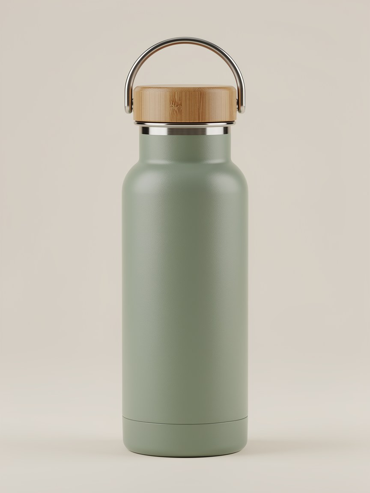
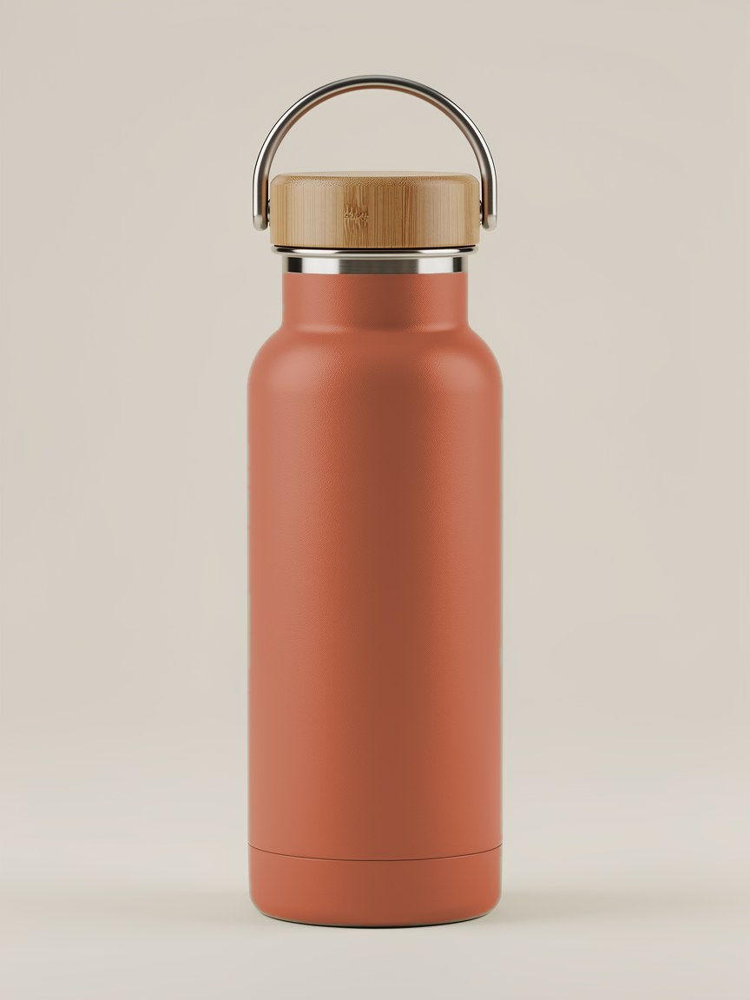
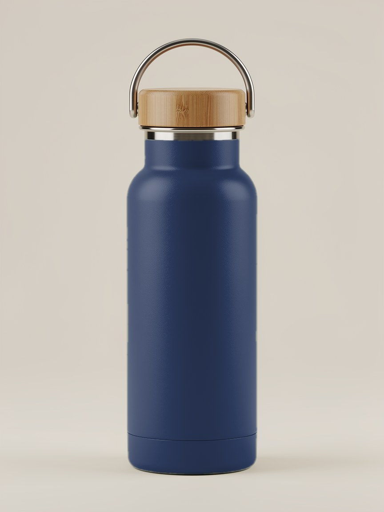
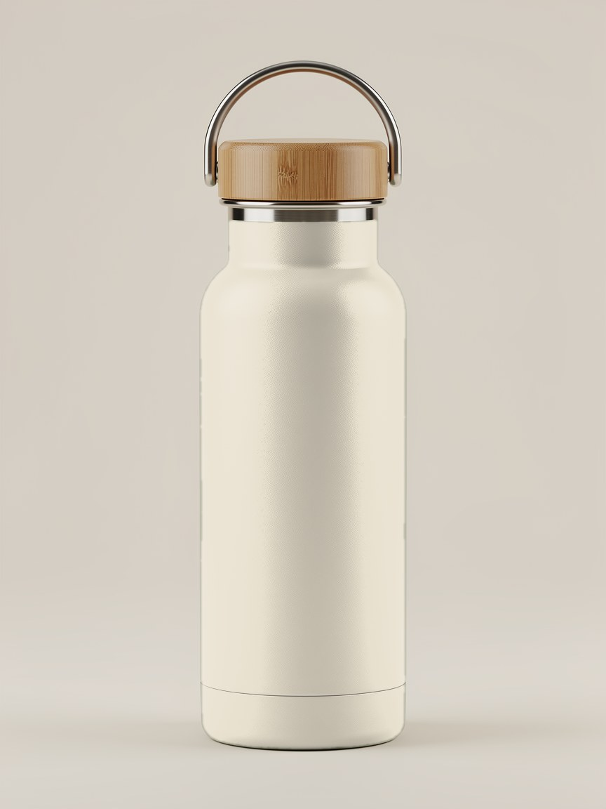
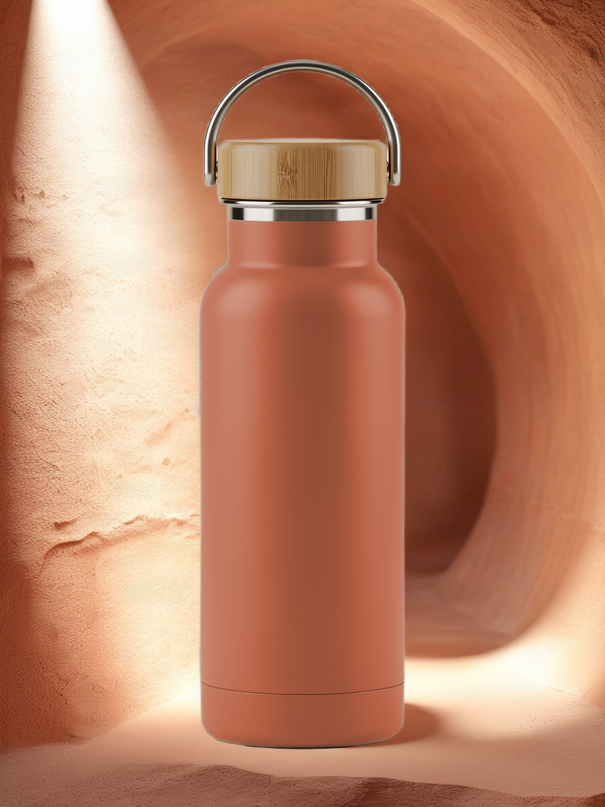

Design it. See it in 3D. Find out if people want it.
Kalpi turns product ideas into real-size 3D prototypes and tests what customers want, before you pay a maker for a 500-unit minimum. Kalpi for Figma makes the 3D · Kalpi Studio tests demand.

1 · Your productA photo of what you sell


2 · Three versionsColour changes are free- 3 · Votes, then depositsFrom your own customers
- 4 · The winnerAsk the maker for a quote
One experiment, start to finish.
Your product: the sage bottle you sell.
The problem: you pay before you know.
Makers ask for a minimum order before they make anything. You pay for hundreds or thousands of units before you know if anyone wants them. Whatever doesn't sell is money lost, and stock that often ends up as waste.
- $8–9kpaid up front for 1,000 units, in one small seller's real quote.
- 10,000+units: one maker's minimum for a custom cap.
- ~21%more than they really pay: what people say they'd pay, on average, in research. So likes and votes aren't enough.
Sources: public seller posts and maker listings collected in Kalpi's research notes; Schmidt & Bijmolt, a meta-analysis of willingness to pay.
How it works, in six steps.
Your product
Start from a photo of something you sell or found, or type a short idea. This is version zero: what you already have.
Try a change
Paint a part and say what it becomes. You get versions A, B and C. A colour change is free; a real change of shape or material uses AI, and you see the price first.
Ask your people
Send the A, B, C page to your own email list. Kalpi decides who sees which version, so the test is fair.
Vote, then deposit
People vote, join the waitlist, then leave a refundable deposit in your own store. It is charged only if the maker's minimum is reached. Votes overstate real buying, so Kalpi counts deposits.
Decide
The winner is the version with the most deposits. Break-even uses realistic numbers. Kalpi drafts a quote request to your maker, with every change marked "to be confirmed".
Make it an ad
Only for the winning, finished product: one 3D model, true to your photo, ready for your ad. Nothing in 3D before then.
Open now: the Studio, for any product (steps 1, 2, 5 and 6). Asking your people, the waitlist and deposits are what we're building next; until then the Studio shows sample results, labelled as samples.
What you get.
A winner backed by deposits
Not likes: people who left a refundable deposit for one version.
A quote request to your maker
Your exact change and quantity, ready to send.

An ad-ready 3D model
One true-to-photo model of the winner, for your ad.
Samples · made from real product photos
Each version becomes a short real-looking clip for your ad.
Who it's for.
Small Shopify brands with an email list, starting with candles and beauty packaging: products where a change is visual, like a colour, a cap or a finish, and where minimum orders hurt.
Pricing Early pricing
- FreeYour first experiment.
- $49Per experiment, for founding sellers.
- $99Per experiment, standard.
Prices may change while we test them. You always see the price before anything is made.
Straight answers.
Does Kalpi hold my customers' money?
No. Deposits go through your own store. They are refundable and charged only if the maker's minimum is reached.
Are the pictures real?
They are concepts, and they are labelled as concepts until your maker confirms the change can be made.
What if nobody votes?
Then you have learned something cheaply: no maker was paid and no stock was made. You can change the versions and ask again.
What does the AI cost me?
Colour changes are free. A real change of shape or material uses AI, and the price is always shown before anything is made.
Do I need 3D?
No. Versions and voting use pictures. 3D is only for the winning product's ad.
What about my maker?
You keep your own maker. Kalpi drafts the quote request; anything not yet confirmed is marked "to be confirmed by the maker".
Will this make me money?
Nobody can promise that. What you get is a real answer about whether people will pay, before you pay for inventory.
Is it live?
The Studio is, for any product. Asking your people, the waitlist and deposits are what we're building next.
Ask first. Make second.
Studio · Pictures are concepts until a maker says yes. Nothing is published.